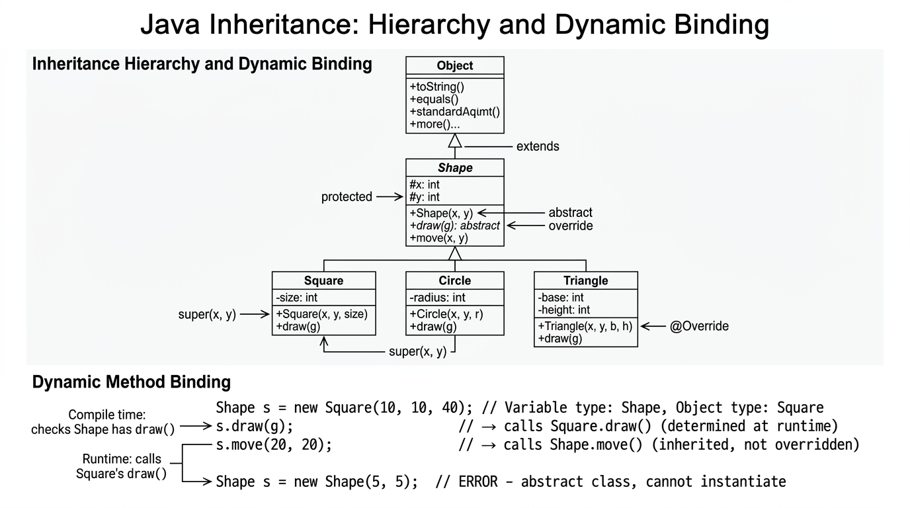

Inheritance — COMP0004 Object-Oriented Programming (UCL)¶
Lecture-style notes aligned with Slide deck 9 (a large topic): inheritance hierarchies, extends, abstract classes/methods, super, protected, overriding vs overloading, dynamic binding, Object, final, and design guidance (composition over inheritance, template method).
1. COMPLETE TOPIC SUMMARIES¶
Inheritance — the “is-a” modelling tool¶
Inheritance models a “kind-of”, specialisation-of, or extension-of relationship between types. The subclass (child) inherits members from the superclass (parent) and can add fields/methods or replace behaviour.
Beginner intuition: If you can say “every Dog is an Animal” without lying, inheritance may fit. If you say “every Car is an Engine,” that’s usually wrong — prefer composition (a car has an engine).
Subclass and superclass in Java¶
- A subclass inherits state and behaviour from its superclass (except where access modifiers block visibility).
- A subclass can specialise behaviour (override methods) and extend the model with new fields/methods.
Java supports single inheritance for classes: a class may extend exactly one superclass.
public class Student extends Person {
private final String studentId;
public Student(String name, String studentId) {
super(name); // superclass initialisation (must be first in this constructor)
this.studentId = studentId;
}
}
A hierarchy example: Person → UCLPerson → …¶
Courses often use a university domain tree (names vary by slide deck):
This illustrates generalisation upward (“Person generalises common identity”) and specialisation downward (“Undergraduate adds degree-stage specifics”).
Generalisation vs specialisation¶
- Generalisation — move shared features up the hierarchy into a superclass to avoid duplication (DRY).
- Specialisation — push distinct features down into subclasses so the superclass stays stable and cohesive.
Abstract vs concrete classes¶
- A concrete class is fully implementable; you can
newit (assuming accessible constructors). - An abstract class is a partial implementation of a concept: it may contain abstract methods (no body) and concrete methods (with bodies). You cannot instantiate an abstract class with
new.
public abstract class Shape {
public abstract double area(); // subclass must implement (unless subclass is also abstract)
public String describe() {
return "shape";
}
}
Abstract methods¶
An abstract method is declared with the abstract keyword, has no method body, and ends with ;.
Any concrete subclass must override and implement all inherited abstract methods (otherwise the subclass must also be declared abstract).
Constructor chaining and super(...)¶
When constructing a subclass object, a superclass portion of the object must be initialised. Java enforces this via constructor chaining:
- If a subclass constructor does not explicitly call another constructor, the compiler inserts
super()(a call to the superclass no-arg constructor) as the first statement. - If the superclass has no accessible no-arg constructor, you must explicitly call
super(args)with appropriate arguments.
Rule: super(...) (or this(...) if chaining within the same class) must be the first statement in the constructor.
public class Employee extends Person {
private final String id;
public Employee(String name, String id) {
super(name);
this.id = id;
}
}
protected access¶
protected members are visible to the same package and to subclasses (including across packages, for subclass code).
This weakens encapsulation compared to private: subclass code can depend on superclass internals. Often, private fields + protected or public getters is safer than scattering protected fields.
Method overriding (not overloading)¶
Overriding redefines an instance method in a subclass with the same signature as an inherited method (modern Java: use @Override to catch mistakes).
public class Square extends Rectangle {
@Override
public String toString() {
return "Square(side=" + getWidth() + ")";
}
}
Contrast with overloading: same method name, different parameter lists in the same class (or inherited visible methods) — compile-time resolution.
Exam trap: changing only the return type in incompatible ways is not a valid override; changing static/
instancenature is also not overriding in the usual sense.
Dynamic method binding (runtime polymorphism)¶
For instance methods, Java uses dynamic binding (late binding): the method executed depends on the actual object’s class at runtime, not only the reference type.

{kind=link}
This is the mechanism behind polymorphism: you write code against a supertype (Shape) and still get specialised behaviour.
static methods are not overridden in the dynamic sense; they are hidden via static dispatch based on the reference type.
Superclass references to subclass objects¶
This pattern is central to OOP APIs:
It is legal because a Square is-a Shape (per your design). You can pass shape to methods expecting Shape, store heterogeneous shapes in a List<Shape>, etc.
The compiler checks members using the reference type (Shape); overridden instance methods still dispatch using the actual object (Square).
java.lang.Object — root of (almost) everything¶
If a class declaration has no extends, it implicitly extends Object.
Common Object methods you must understand:
toString()— string representation (often overridden for debugging/UI).equals(Object o)— logical equality (override consistently withhashCode()if used in hash collections).clone()— optional copying mechanism; often considered awkward; many teams prefer copy constructors or factories.
super for overridden methods and hidden fields¶
Inside a subclass, super.method() calls the superclass version of an overridden instance method.
public class B extends A {
@Override
public void greet() {
super.greet();
System.out.println("from B");
}
}
super.field accesses a superclass field if a subclass field hides the name (field hiding is usually discouraged—rename for clarity).
Template method pattern¶
The template method pattern defines an algorithm skeleton in a superclass (final template method optional) with steps implemented/overridden in subclasses.
Typical shape:
public abstract class Report {
public final void generate() { // optional: mark final to freeze workflow
header();
body();
footer();
}
protected abstract void body();
protected void header() { /* default */ }
protected void footer() { /* default */ }
}
Subclasses specialise body() (and optionally hooks), while the overall workflow stays consistent.
final keyword (inheritance-related meanings)¶
finalclass — cannot be subclassed (Stringisfinalin the Java library).finalmethod — cannot be overridden by subclasses.finalvariable/field — assignment happens once (immutability for references: the object may still be mutable unless designed otherwise).
Good practice: inheritance only for true “is-a”¶
Inheritance is a strong coupling mechanism: subclasses depend on superclass internals and evolution. Use it when the relationship is stable and conceptually truthful.
If you only want reuse of implementation but not a meaningful “is-a,” you often get fragile hierarchies.
Composition over inheritance¶
Composition means an object has collaborators (fields) and delegates work to them.
Classic teaching example: a Stack should use an ArrayList internally (delegation), not extend ArrayList:
public class Stack<E> {
private final ArrayList<E> data = new ArrayList<>();
public void push(E x) { data.add(x); }
public E pop() { return data.remove(data.size() - 1); }
}
Why: extends ArrayList exposes the entire list API publicly (unless carefully restricted), breaking encapsulation and creating LSP hazards (a stack is not “any list operation you can do on ArrayList”).
Implementation inheritance vs behaviour specification inheritance¶
- Implementation inheritance — reuse actual code from superclass method bodies (convenience, but can entangle you with superclass changes).
- Behaviour specification inheritance — inherit a contract (often via abstract methods / interfaces) and provide fresh implementations in subclasses.
Modern Java style often pushes specification toward interface types, using inheritance for true taxonomies and shared protected hooks when justified.
2. EXAM-STYLE QUESTIONS (3–5 with model answers)¶
Q1. Explain dynamic method binding with a small Java example involving a superclass reference and a subclass object.¶
Model answer: For instance methods, the JVM selects the implementation based on the runtime class of the object. Example:
Even though s is typed as Shape, if Circle overrides area(), Circle’s area runs. This enables polymorphism: one interface (Shape), many behaviours.
Q2. What is an abstract class? Can you instantiate it with new? What must a concrete subclass do?¶
Model answer: An abstract class may contain abstract methods (declared with abstract, no body) and can contain concrete methods/fields. You cannot instantiate it with new directly. A concrete subclass must implement every inherited abstract method (or be declared abstract itself).
Q3. Why must super(...) be the first statement in a constructor, and what happens if the superclass has no no-arg constructor?¶
Model answer: A subclass object contains a superclass subobject; Java requires that superclass construction completes before the subclass finishes initialisation, so super(...) (or a this(...) chain that eventually reaches super) must run first. If there is no accessible super() because the superclass only defines constructors with parameters, the subclass must explicitly call super(args) with valid arguments—otherwise the code does not compile.
Q4. Compare overriding vs overloading in one paragraph, including when each is resolved.¶
Model answer: Overriding replaces an inherited instance method with the same signature in a subclass; calls through superclass references still dispatch to the subclass version at runtime (dynamic binding). Overloading defines multiple methods with the same name but different parameter lists; the compiler picks the best match at compile time based on static types of arguments. @Override helps ensure you truly override.
Q5. Explain composition over inheritance using Stack and ArrayList.¶
Model answer: extends ArrayList makes Stack a kind of list in the type system, exposing list operations that can violate stack invariants (e.g. arbitrary insertion) and creates a weak “is-a” relationship. Composition stores an ArrayList privately and exposes only push/pop/peek—delegation—preserving encapsulation and a truthful API. This is a standard illustration of LSP-friendly design and low coupling to ArrayList’s full surface area.
3. MUST-KNOW KEY POINTS¶
- Inheritance models specialisation; Java classes have single superclass via
extends. - Abstract classes/methods describe partial contracts; no instantiation of abstract classes.
- Constructor chaining uses
super(...)(often required first line); compiler insertssuper()if omitted only when valid. protectedtrades encapsulation for subclass access; preferprivate+ accessors when possible.- Overriding matches signatures for instance methods;
@Overrideis best practice. - Dynamic binding selects subclass implementations at runtime for instance methods.
Objectis the root; knowtoString,equals,hashCode,cloneat syllabus depth.super.method()calls superclass implementation of an overridden method.- Template method fixes an algorithm outline; subclasses fill steps.
finalcan freeze subclassing (class) or overriding (method).- Composition over inheritance prevents exposing internals of reusable library classes.
- Distinguish implementation inheritance vs specification inheritance (often interfaces).
4. HIGH-PRIORITY TOPICS (🔴 Must Know / 🟡 Important / 🟢 Useful)¶
🔴 Must Know¶
- Subclass/superclass,
extends, single inheritance - Abstract class/method rules + cannot instantiate
super(...)constructor chaining (first statement; no-arg vs explicit)- Overriding vs overloading + dynamic binding
- Supertype reference, subtype object (
Shape s = new Square(...)) Objectessentials (toString,equals/hashCodepairing idea)finalclass/method consequences
🟡 Important¶
protectedvisibility and encapsulation trade-offssuperinstance method calls in overrides- Template method pattern (skeleton + overridden steps)
- Composition over inheritance + delegation
- LSP as the “substitutability” principle tied to inheritance correctness
🟢 Useful¶
- Implementation vs specification inheritance framing
clone()pitfalls and why teams prefer alternatives- Field hiding vs overriding (avoid hiding; know it exists)
- Static method hiding vs instance overriding (exam edge cases)
5. TOPIC INTERCONNECTIONS & BIGGER PICTURE¶
- Inheritance is one half of polymorphism; interfaces + generics (later modules) complete “program to abstractions.”
- Abstract classes sit between concrete classes and
interfacecontracts: useful when you want shared code + forced overrides. - Constructor chaining connects to initialisation safety and immutable object patterns (superclass invariants first).
equals/hashCodecorrectness matters once you store objects inHashMap/HashSet—often taught right afterObjectbehaviour.- Template method foreshadows frameworks (superclass defines lifecycle; your subclass fills hooks).
- Composition pairs with SOLID (especially DIP) from the design lecture: depend on small abstractions, not giant superclass implementations.
6. EXAM STRATEGY TIPS¶
- For inheritance questions, start by drawing a tiny hierarchy and labelling “is-a” truthfulness—examiners reward conceptual correctness before code detail.
- Whenever you mention
equals, mentionhashCodein the same breath if collections are involved. - If a problem shows
void Sub(...) {}, check constructor vs method; if it showsstatic“override”, discuss hiding vs dynamic override. - Use
@Overridein written code snippets even on exams if permitted—it signals you understand compile-time checking. - For “design critique” questions, default to: encapsulation, LSP, composition over inheritance, and minimal public API.
These notes are for revision; follow your module’s exact slide definitions, coding standards, and any mandated UML notation in assessed work.